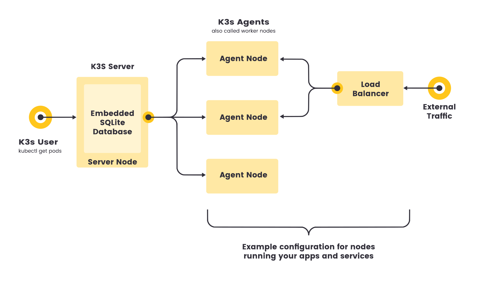
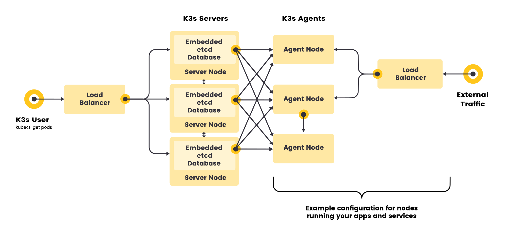
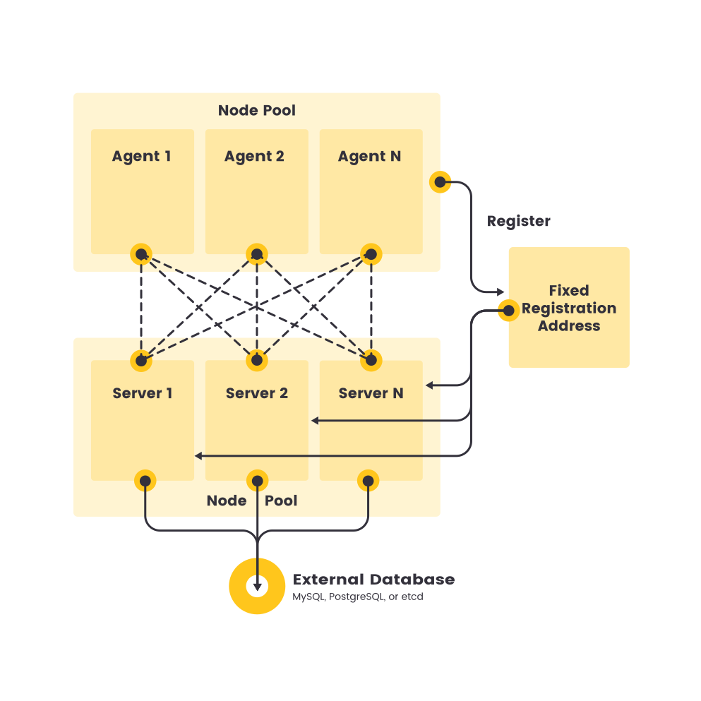

아키텍처
이 페이지에서는 고가용성 K3s 서버 클러스터의 아키텍처와 단일 노드 서버 클러스터와의 차이점에 대해 설명합니다.
또한 에이전트 노드가 K3s 서버에 등록되는 방법도 설명합니다.
-
서버 노드는
k3s server명령을 실행하는 호스트로 정의되며, 컨트롤 플레인 및 데이터스토어 구성 요소는 K3s에서 관리합니다. -
에이전트 노드는 데이터스토어 또는 컨트롤 플레인 구성 요소 없이
k3s agent명령을 실행하는 호스트로 정의됩니다. -
서버와 에이전트 모두 kubelet, 컨테이너 런타임 및 CNI를 실행합니다. 에이전트 없는 서버 실행에 대한 자세한 내용은 고급 옵션 설명서를 참조하세요.

임베디드 DB가 있는 단일 서버 설정
다음 다이어그램은 임베디드 SQLite 데이터베이스가 있는 단일 노드 K3s 서버가 있는 클러스터의 예를 보여줍니다.
이 구성에서 각 에이전트 노드는 동일한 서버 노드에 등록됩니다. K3s 사용자는 서버 노드에서 K3s API를 호출하여 쿠버네티스 리소스를 조작할 수 있습니다.

High-Availability K3s
Single server clusters can meet a variety of use cases, but for environments where uptime of the Kubernetes control plane is critical, you can run K3s in an HA configuration. An HA K3s cluster comprises:
-
Embedded DB
-
External DB
-
Three or more server nodes that will serve the Kubernetes API and run other control plane services
-
An embedded etcd datastore (as opposed to the embedded SQLite datastore used in single-server setups)

-
Two or more server nodes that will serve the Kubernetes API and run other control plane services
-
An external datastore (such as MySQL, PostgreSQL, or etcd)

에이전트 노드를 위한 고정 등록 주소
고가용성 서버 구성에서 각 노드는 아래 다이어그램과 같이 고정 등록 주소를 사용하여 Kubernetes API에 등록해야 합니다.
등록 후 에이전트 노드는 서버 노드 중 하나에 직접 연결을 설정합니다.

에이전트 노드 등록 작동 방식
에이전트 노드는 k3s agent 프로세스에 의해 시작된 웹소켓 연결로 등록되며, 에이전트 프로세스의 일부로 실행되는 클라이언트 측 로드밸런서에 의해 연결이 유지됩니다. 이 로드 밸런서는 클러스터의 모든 서버에 대한 안정적인 연결을 유지하여 개별 서버의 중단을 허용하는 에이전시 서버에 대한 연결을 제공합니다.
에이전트는 노드 클러스터 시크릿과 노드에 대해 무작위로 생성된 비밀번호를 사용하여 서버에 등록하며, 이 비밀번호는 /etc/rancher/node/password에 저장됩니다. 서버는 개별 노드의 비밀번호를 쿠버네티스 시크릿으로 저장하며, 이후 모든 시도는 동일한 비밀번호를 사용해야 합니다. 노드 패스워드 시크릿은 <host>.node-password.k3s 템플릿을 사용하는 이름으로 kube-system 네임스페이스에 저장됩니다. 이는 노드 ID의 무결성을 보호하기 위해 수행됩니다.
에이전트의 /etc/rancher/node 디렉터리가 제거되거나 기존 이름을 사용하여 노드에 다시 가입하려는 경우, 클러스터에서 노드를 삭제해야 합니다. 이렇게 하면 이전 노드 항목과 노드 비밀번호 시크릿이 모두 정리되고 노드가 클러스터에 (재)조인할 수 있습니다.
|
K3s v1.20.2 이전 서버는 |
호스트 이름을 자주 재사용하지만 노드 암호 시크릿을 제거할 수 없는 경우, --with-node-id 플래그를 사용하여 K3s 서버 또는 에이전트를 시작하면 호스트 이름에 고유 노드 ID를 자동으로 추가할 수 있습니다. 활성화하면 노드 ID는 /etc/rancher/node/에도 저장됩니다.